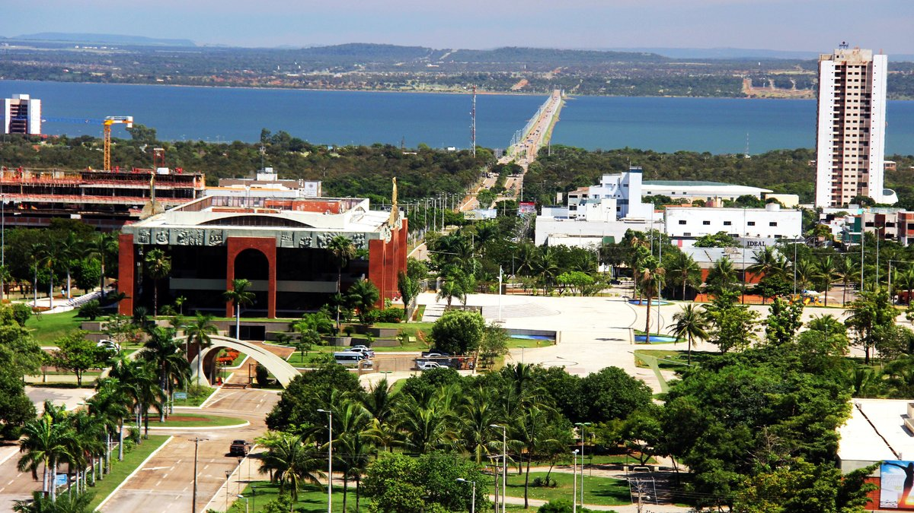
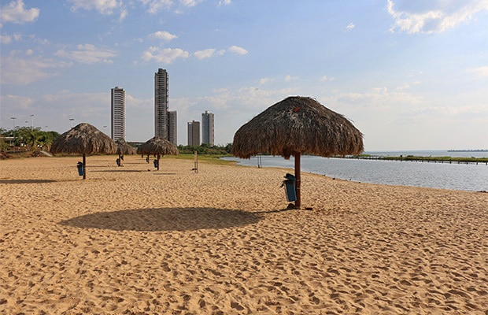
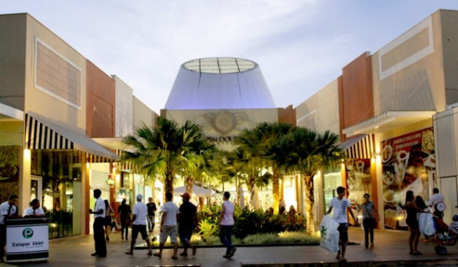

Bem Vindo a Palmas
Sobre
Inaugurada em 20 de maio de 1989 e instalada em 1º de janeiro de 1990, Palmas está cravada na exuberante paisagem do Cerrado, no coração do Brasil. Conhecida como a Capital das Oportunidades e ancorada em um projeto de desenvolvimento sustentável no qual o meio ambiente e homem estão no centro do estudo, a cidade é dotada de um ecossistema de grande beleza cênica com parques urbanos, jardins e áreas verdes estrategicamente projetadas. A Capital do Tocantins é a última cidade brasileira planejada do século 20. Possui uma arquitetura arrojada, com avenidas largas, dotadas de completo trabalho paisagístico e divisão urbanística caracterizada por grandes quadras comerciais e residenciais. A cidade é propícia ao desenvolvimento do turismo de negócios e eventos e ecoturismo. Localizada a 805 km de Brasília-DF, é servida pelas principais companhias aéreas. Sua beleza, aliada ao caráter progressista, ajudou a atrair brasileiros de todos os estados. Essa gente é a força que alavanca a cidade, dona de uma rica diversidade cultural e que a cada dia incrementa sua infraestrutura e diversifica seus serviços.
Fonte: Prefeitura de Palmas
Opções de Lazer
Praias e Parques
Sob um sol enlouquecedor, a capital do Tocantins tem os seus meios para aliviar o calor. Destacamos Praia da Graciosa e Praia do Prata.
Shoppings
Shoppings center com vasta praça de alimentação, espaço kids e lojas nos diversos segmentos que o cliente precisar.
Opções de Hospedagem
Hotéis e Pousadas.
As opções de hospedagens variam, agradando diversos gostos e bolsos: Destacamos Ibis styles, Céu Palace e Pousada dos Girassóis.
Onde Comer
Restaurantes
Palmas possui elegantes restaurantes com gastronomia tocantinense, ambiente acolhedor e culinária de excelente qualidade.
Feiras
Localizadas em diversas áreas da cidade, contam com hortifuti e comidas prontas. A feira mais centralizada é a da 304 Sul.
Lanchonetes
A cidade conta com diversas hamburguerias de ruas, uma vasta praça de alimentação nos shoppings e lanchonetes para todos os gostos na Avenida Palmas Brasil.